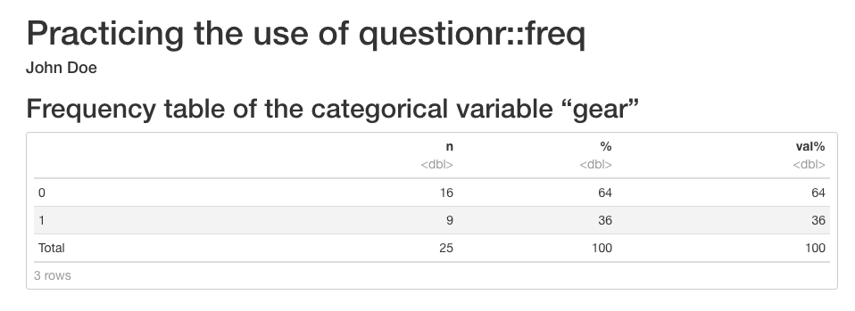
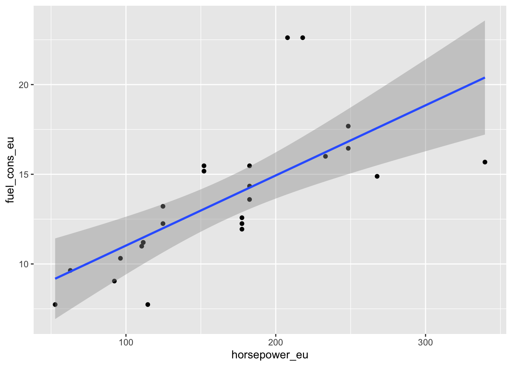

14 Analyses with R Markdown
You can now start analyzing your data in your “car_dataset6” in R Markdown document. If you want, you can destroy text and chunks from RStudio’s template or write over them. However, be careful not to mess up the YAML header or the first “r setup” chunk.
14.1 Viewing the dataset
14.1.1 head command
We make use of the very useful command head which prints the first 6 rows of our data. We get a quick glance at our data and, if we want, we can share it forward in the form of R Markdown.
You can e.g. write “Here is an excerpt of a few rows of our finalized article data”. After that, you can hit an empty line with enter and write the next chunk, which must have 3 heavy accents at the beginning and at the end:
Here is an excerpt of a few rows from our finished data in this article.
## # A tibble: 6 × 5
## `Car Brands` fuel_cons_eu horsepower_eu mass_eu gear
## <chr> <dbl> <dbl> <dbl> <fct>
## 1 Mazda RX4 11.2 112. 1188. 1
## 2 Mazda RX4 Wag 11.2 112. 1304. 1
## 3 Hornet Sportabout 12.6 177. 1560. 0
## 4 Duster 360 16.4 248. 1619. 0
## 5 Merc 240D 9.64 62.9 1447. 0
## 6 Merc 230 10.3 96.3 1429. 0While tibble is neat in many ways, I personally don’t like the way the decimal places in tibble-type datasets are printed. To remedy this and to beautify the output, the command kable comes to our help.
14.1.2 kable beautifies
To make the output nicer to look at, add the command kable, which comes with the package knitr. You can install that package by issuing the following command in the console:
install.packages("knitr")In addition to this, you should invoke knitr by adding it to the first chunk named r setup. After that, your first chunk will look like this:
```{r setup, include=FALSE}
knitr::opts_chunk$set(echo = TRUE)
library(dplyr)
library(knitr)
source("my_data.R")
```After this you can use the kable command.
Let’s pipe all the commands as follows:
You will now see a prettier output:
| Car Brands | fuel_cons_eu | horsepower_eu | mass_eu | gear |
|---|---|---|---|---|
| Mazda RX4 | 11.200000 | 111.52793 | 1188.432 | 1 |
| Mazda RX4 Wag | 11.200000 | 111.52793 | 1304.100 | 1 |
| Hornet Sportabout | 12.577540 | 177.43080 | 1560.384 | 0 |
| Duster 360 | 16.447552 | 248.40312 | 1619.352 | 0 |
| Merc 240D | 9.639344 | 62.86120 | 1446.984 | 0 |
| Merc 230 | 10.315789 | 96.31958 | 1428.840 | 0 |
14.1.3 tail command
The command tail does the same as head but from the other direction, i.e. it shows the last 6 lines of the dataset.
| Car Brands | fuel_cons_eu | horsepower_eu | mass_eu | gear |
|---|---|---|---|---|
| Porsche 914-2 | 9.046154 | 92.26402 | 970.7040 | 1 |
| Lotus Europa | 7.736842 | 114.56960 | 686.2968 | 1 |
| Ford Pantera L | 14.886076 | 267.66704 | 1437.9120 | 1 |
| Ferrari Dino | 11.939086 | 177.43080 | 1256.4720 | 1 |
| Maserati Bora | 15.680000 | 339.65325 | 1619.3520 | 1 |
| Volvo 142E | 10.990654 | 110.51404 | 1261.0080 | 1 |
14.2 Examining variables
14.2.1 min, max, mean
With the command summarise of dplyr, we can easily view e.g. the minimum, maximum and mean values of the variables we want:
```{r mean_values, echo=FALSE}
# Let's select our dataset "car_dataset6" for processing:
car_dataset6 %>%
# Let's use the command summarise:
summarise(fuel_cons_min = min(fuel_cons_eu),
fuel_cons_max = max(fuel_cons_eu),
fuel_cons_mean = mean(fuel_cons_eu)) %>%
# We prettify the output with kable:
kable
```| fuel_cons_min | fuel_cons_max | fuel_cons_mean |
|---|---|---|
| 7.736842 | 22.61538 | 13.60331 |
You can also print a specific statistic - for example, the mean - for several variables using the summarise_at command. You might want to write free text before the next code, e.g.
Below you can see the mean values of the variables of the dataset “car_dataset6”.
```{r mean_values2, echo=FALSE}
car_dataset6 %>%
# We use now the command summarise_at. The variables that we want
# to look at have to be expressed in the following way:
# c("variable1", "variable2", "variable3")
# After these comes the chosen statistic:
summarise_at(c("fuel_cons_eu", "horsepower_eu", "mass_eu"), mean) %>%
# We prettify the output:
kable
```Below you can see the mean values of the variables of “car_dataset6”.
| fuel_cons_eu | horsepower_eu | mass_eu |
|---|---|---|
| 13.60331 | 165.9536 | 1551.711 |
This analysis shows that the cars in our dataset are moderate gas guzzlers.
14.2.2 summary
With the function summary() you get a summary of your entire dataset.
| Car Brands | fuel_cons_eu | horsepower_eu | mass_eu | gear | |
|---|---|---|---|---|---|
| Length:25 | Min. : 7.737 | Min. : 52.72 | Min. : 686.3 | 0:16 | |
| Class :character | 1st Qu.:11.200 | 1st Qu.:111.53 | 1st Qu.:1304.1 | 1: 9 | |
| Mode :character | Median :13.213 | Median :177.43 | Median :1560.4 | NA | |
| NA | Mean :13.603 | Mean :165.95 | Mean :1551.7 | NA | |
| NA | 3rd Qu.:15.474 | 3rd Qu.:207.85 | 3rd Qu.:1714.6 | NA | |
| NA | Max. :22.615 | Max. :339.65 | Max. :2460.3 | NA |
If you want, you can also run the summary command for each variable in your dataset separately. You can achieve this by “looping” the summary with a command called sapply. In this case, however, you cannot use kable, so the output is not so pretty.
## $`Car Brands`
## Length Class Mode
## 25 character character
##
## $fuel_cons_eu
## Min. 1st Qu. Median Mean 3rd Qu. Max.
## 7.737 11.200 13.213 13.603 15.474 22.615
##
## $horsepower_eu
## Min. 1st Qu. Median Mean 3rd Qu. Max.
## 52.72 111.53 177.43 165.95 207.85 339.65
##
## $mass_eu
## Min. 1st Qu. Median Mean 3rd Qu. Max.
## 686.3 1304.1 1560.4 1551.7 1714.6 2460.3
##
## $gear
## 0 1
## 16 9There are several packages for R that allow you to get a more beautiful and versatile description of your dataset than the summary command is capable of. Next, one of these packages will be presented.
14.2.3 summarytools
With the functions of the summarytools package, you can get beautiful and diverse presentations of your dataset.
Installation is done by typing install.packages("summarytools") into the console and pressing enter.
14.2.3.1 dfSummary
dfSummary gives a very versatile representation of your entire dataset. See an example of the “car_dataset6” below. Run the following code:
```{r summarytools2, echo=FALSE, results="asis"}
# summarytools requires the attribute results="asis" to show a pretty
# output in R Markdown.
library(summarytools)
car_dataset6 %>% dfSummary(varnumbers = FALSE,
plain.ascii = FALSE,
style = "grid",
graph.magnif = 0.75,
max.distinct.values = 3, # I wrote the number 3 here
# in order to not see exhaustive number
# of cars in this example.
valid.col = FALSE,
tmp.img.dir = "/tmp")
```
You will then see the following summary:
| Variable | Stats / Values | Freqs (% of Valid) | Graph | Missing |
|---|---|---|---|---|
| Car Brands [character] |
1. AMC Javelin 2. Cadillac Fleetwood 3. Camaro Z28 [ 22 others ] |
1 ( 4.0%) 1 ( 4.0%) 1 ( 4.0%) 22 (88.0%) |
 |
0 (0.0%) |
| fuel_cons_eu [numeric] |
Mean (sd) : 13.6 (3.8) min < med < max: 7.7 < 13.2 < 22.6 IQR (CV) : 4.3 (0.3) |
20 distinct values |  |
0 (0.0%) |
| horsepower_eu [numeric] |
Mean (sd) : 166 (68.8) min < med < max: 52.7 < 177.4 < 339.7 IQR (CV) : 96.3 (0.4) |
17 distinct values |  |
0 (0.0%) |
| mass_eu [numeric] |
Mean (sd) : 1551.7 (440.4) min < med < max: 686.3 < 1560.4 < 2460.3 IQR (CV) : 410.5 (0.3) |
22 distinct values |  |
0 (0.0%) |
| gear [factor] |
1. 0 2. 1 |
16 (64.0%) 9 (36.0%) |
 |
0 (0.0%) |
14.2.3.2 descr
The function descr of the summarytools package takes only continuous (numerical) variables from the dataset for processing and displays different statistics according to the user’s wishes. Look at the following examples.
First example:
```{r descr, echo=FALSE, results="asis"}
library(summarytools)
descr(car_dataset6,
stats = "common",
transpose = TRUE,
headings = FALSE)
```We asked for “common” identifiers - you can see what the descr command thinks they are from the table below.
Note that R throws a warning above the table that only numeric variables made it into the analysis, which was already known:
## Non-numerical variable(s) ignored: Car Brands, gear| Mean | Std.Dev | Min | Median | Max | N.Valid | Pct.Valid | |
|---|---|---|---|---|---|---|---|
| fuel_cons_eu | 13.60 | 3.82 | 7.74 | 13.21 | 22.62 | 25.00 | 100.00 |
| horsepower_eu | 165.95 | 68.76 | 52.72 | 177.43 | 339.65 | 25.00 | 100.00 |
| mass_eu | 1551.71 | 440.39 | 686.30 | 1560.38 | 2460.33 | 25.00 | 100.00 |
In the second example, we define manually the statistics we want:
```{r descr2, echo=FALSE, results="asis"}
library(summarytools)
descr(car_dataset6,
stats = c("mean","sd","min","max"),
transpose = TRUE,
headings = FALSE)
```## Non-numerical variable(s) ignored: Car Brands, gear| Mean | Std.Dev | Min | Max | |
|---|---|---|---|---|
| fuel_cons_eu | 13.60 | 3.82 | 7.74 | 22.62 |
| horsepower_eu | 165.95 | 68.76 | 52.72 | 339.65 |
| mass_eu | 1551.71 | 440.39 | 686.30 | 2460.33 |
By typing ?descr in the console, you can find out more about all the statistics (the section “stats” of the Help) you can request from the descr function.
14.2.3.3 freq
The function freq of the summarytools package is used to study the characteristics of categorical variables: n-numbers, percentages and cumulative frequency of categories.
I’ve tweaked the sample code below to make this function as similar to SAS’s great PROC FREQ as possible.
```{r freq, echo=FALSE, results="asis"}
library(summarytools)
st_options(freq.cumul = TRUE,
freq.totals = TRUE,
freq.report.nas = FALSE,
plain.ascii = FALSE,
headings = FALSE)
freq(car_dataset6$gear,
style = 'rmarkdown',
caption = 'Frequencies: car_dataset6$gear')
```With the code shown above, we look at the identifiers of the categories (0 and 1) of the categorical variable “gear” of “car_dataset6”. I only removed the titles for “printing reasons” related to the numbering of the chapters in this guide; for the same reason, I manually added the title (caption text). The table is shown here below:
| Freq | % | % Cum. | |
|---|---|---|---|
| 0 | 16 | 64.00 | 64.00 |
| 1 | 9 | 36.00 | 100.00 |
| Total | 25 | 100.00 | 100.00 |
14.2.3.4 ctable
The function ctable of the summarytools package can perform cross-tabulations somewhat in the same way as SAS’s PROC FREQ.
For this exercise, we’ll make a new categorical variable “gasguzzler”:
```{r ctable, echo=FALSE, results='asis'}
library(summarytools)
car_dataset6 %>% mutate(gasguzzler = ifelse(fuel_cons_eu < 13.2, 0, 1)) -> car_dataset7
car_dataset7$gasguzzler <- as.factor(car_dataset7$gasguzzler)
ctable(x = car_dataset7$gear,
y = car_dataset7$gasguzzler,
prop = 'r',
totals = T,
headings = FALSE)
```| gasguzzler | 0 | 1 | Total | |
| gear | ||||
| 0 | 5 (31.2%) | 11 (68.8%) | 16 (100.0%) | |
| 1 | 7 (77.8%) | 2 (22.2%) | 9 (100.0%) | |
| Total | 12 (48.0%) | 13 (52.0%) | 25 (100.0%) |
14.2.4 questionr::freq
Recently, instead of the function freq from the summarytools package, I have been using the function freq from the questionr package quite a lot. This has the following advantages:
- If you run the analysis in (or “under”) the chunk (by pressing the play button on the upper right of the chunk), the result of the analysis is shown in a nice, “non-ASCII-like” printout under the chunk.
- If you set “paged” as the format of the HTML file in the YAML section at the beginning of the document, the same pretty output of questionr::freq continues even in the HTML file, after pressing the button Knit.
Disadvantages:
- You want see the name of the processed variable anywhere
- This can be remedied by writing something about the variable in question above the code chunk (for instance in the subheading of the R Markdown document)
Below is a working example with YAML sections.
---
title: Practicing the use of questionr::freq
author: "John Doe"
output:
html_document:
df_print: "paged"
---
```{r setup, include=FALSE}
knitr::opts_chunk$set(echo = TRUE)
```
## Frequency table of the categorical variable "gear"
```{r practicing questionr_freq, echo=FALSE}
library(questionr)
questionr::freq(car_dataset6$gear, total = T)
```
With the above code, you will get the following HTML output after knitting the R Markdown document:

14.2.5 table1
You should also consider installing the table1 package. Another equally good option is the package tableone. With both of these, a very simple command can generate a “Table 1. Characteristics” table for the article being worked on.
You can install the table1 package by issuing the following command in the console:
install.packages("table1")After that, you can try the package as follows:
```{r table1, echo=FALSE}
library(table1)
label(car_dataset6$fuel_cons_eu) <- "Fuel consumption"
label(car_dataset6$horsepower_eu) <- "Horse power"
label(car_dataset6$mass_eu) <- "Mass"
label(car_dataset6$gear) <- "Gear"
units(car_dataset6$fuel_cons_eu) <- "l/100 km"
units(car_dataset6$mass_eu) <- "kg"
table1(~ fuel_cons_eu + horsepower_eu + mass_eu + factor(gear),
caption = "Table 1. Characteristics",
data=car_dataset6)
```| Overall (N=25) |
|
|---|---|
| Fuel consumption (l/100 km) | |
| Mean (SD) | 13.6 (3.82) |
| Median [Min, Max] | 13.2 [7.74, 22.6] |
| Horse power | |
| Mean (SD) | 166 (68.8) |
| Median [Min, Max] | 177 [52.7, 340] |
| Mass (kg) | |
| Mean (SD) | 1550 (440) |
| Median [Min, Max] | 1560 [686, 2460] |
| factor(gear) | |
| 0 | 16 (64.0%) |
| 1 | 9 (36.0%) |
14.3 Graphs
You can easily add graphs to your R Markdown document. Next, we’ll look at Base-R’s plot command, followed by the versatile ggplot.
14.3.2 ggplot2
For even slightly more complex plots, I recommend that you consider installing the ggplot2 package by issuing the following command in the console:
install.packages("ggplot2")After that, you can redo with ggplot2 the graph already presented above, and you can, for example, add a regression line as follows:
```{r fuel_cons_ggplot2, echo=FALSE, message = FALSE}
# ggplot2 is somewhat "talky", so I added the
# option message = FALSE above; of course you can try
# removing it.
library(ggplot2)
ggplot(car_dataset6, aes(horsepower_eu, fuel_cons_eu)) +
geom_point() +
geom_smooth(method='lm') # + theme_classic()
# you can remove the above hashtag if you want a classic theme
```
If you don’t like background colors or colors in general in your graph, these can be adjusted endlessly and very precisely when using ggplot2. There are also ready-made various themes; if you want, you can try how theme_classic looks like by removing the hashtag symbol before it in the example code above.
14.4 Linear regression
Above, we examined the connection between horse power and gas consumption with graphs. You can study the same set of questions numerically with linear regression.
14.4.1 Simple regression
We start with the so-called simple linear regression:
```{r simple_linear_regression, echo=FALSE}
# For the code to work, the expression "data = ." is required. which means that
# that the data that came through the "pipe" is included in the regression mode
car_dataset6 %>%
lm(fuel_cons_eu ~ horsepower_eu, data = .) %>%
summary()
```##
## Call:
## lm(formula = fuel_cons_eu ~ horsepower_eu, data = .)
##
## Residuals:
## Min 1Q Median 3Q Max
## -4.7143 -1.4745 -0.2755 0.8574 7.3742
##
## Coefficients:
## Estimate Std. Error t value Pr(>|t|)
## (Intercept) 7.115144 1.477471 4.816 7.37e-05 ***
## horsepower_eu 0.039096 0.008249 4.739 8.91e-05 ***
## ---
## Signif. codes: 0 '***' 0.001 '**' 0.01 '*' 0.05 '.' 0.1 ' ' 1
##
## Residual standard error: 2.779 on 23 degrees of freedom
## Multiple R-squared: 0.4941, Adjusted R-squared: 0.4721
## F-statistic: 22.46 on 1 and 23 DF, p-value: 8.912e-05Let’s take a look at the results. When examining the association of horse power with gas consumption, the slope turned out to be 0.039096 and the P-value was 8.91e-05 ***.
So horse power seems to be related to gas consumption, at least when examined with simple linear regression.
The output on the screen just looks unpretty when produced with the summary command of the Base-R. tidy will help us - more about that in the following.
14.4.2 tidy
In the previous paragraph, we ran a simple linear regression and looked at the results with the summary command, but the output was esthetically not pleasing to the eye.
To remedy this, you might want to install the package broom. The package in question comes with the command tidy, which can be used to print the results of the regression model in a beautiful way when kable is also put in the same pipe.
You can install the package broom by running the following command in the console:
install.packages("broom")You can then run the following code:
```{r simple_regression_tidy, echo=FALSE}
# Note that you can also put the library(broom) command directly in your r setup chunk,
# so it doesn't have to be repeated constantly:
library(broom)
car_dataset6 %>%
lm(fuel_cons_eu ~ horsepower_eu, data = .) %>%
tidy %>%
kable
```
As you can see below, tidy and kable work together to produce a prettier output that you can share to your colleagues:
| term | estimate | std.error | statistic | p.value |
|---|---|---|---|---|
| (Intercept) | 7.1151438 | 1.4774711 | 4.815758 | 7.37e-05 |
| horsepower_eu | 0.0390963 | 0.0082491 | 4.739457 | 8.91e-05 |
14.4.3 Multiple regression
Let’s continue with the linear model but add mass and gear as covariates. In this case, we’re dealing with a multiple linear regression model.
```{r multiple_regression, echo=FALSE}
library(broom)
car_dataset6 %>%
lm(fuel_cons_eu ~ horsepower_eu + mass_eu + gear, data = .) %>%
tidy %>%
kable
```| term | estimate | std.error | statistic | p.value |
|---|---|---|---|---|
| (Intercept) | 0.8439313 | 2.0599787 | 0.4096796 | 0.6861899 |
| horsepower_eu | 0.0157904 | 0.0069578 | 2.2694621 | 0.0338970 |
| mass_eu | 0.0064374 | 0.0014619 | 4.4033854 | 0.0002477 |
| gear1 | 0.4164721 | 1.0858710 | 0.3835373 | 0.7051768 |
Horsepower still seems to be related to gas consumption, but not as strongly anymore. Mass seems to be more related to gas consumption. Interestingly, gear doesn’t seem to be related to fuel consumption.
R guide by Ville Langén is licensed under Attribution-ShareAlike 4.0 International